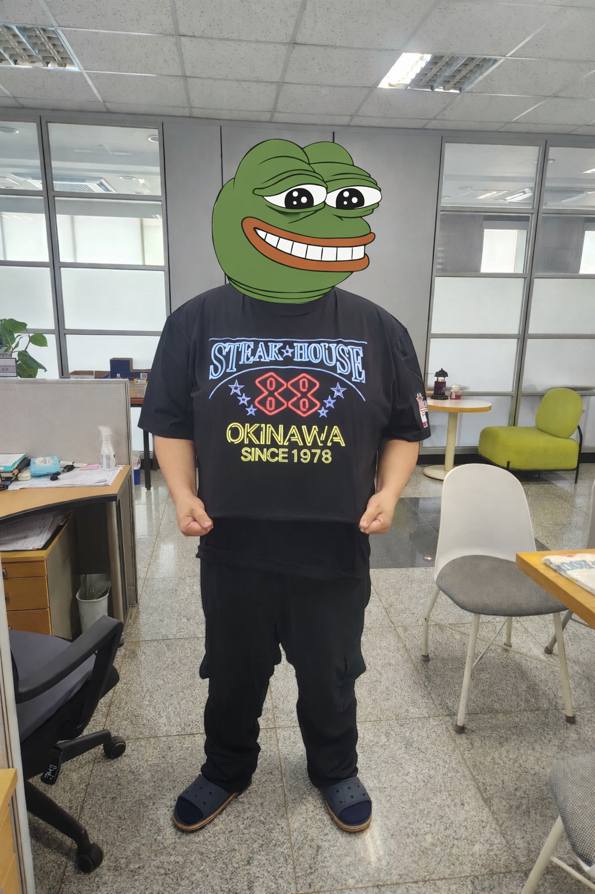
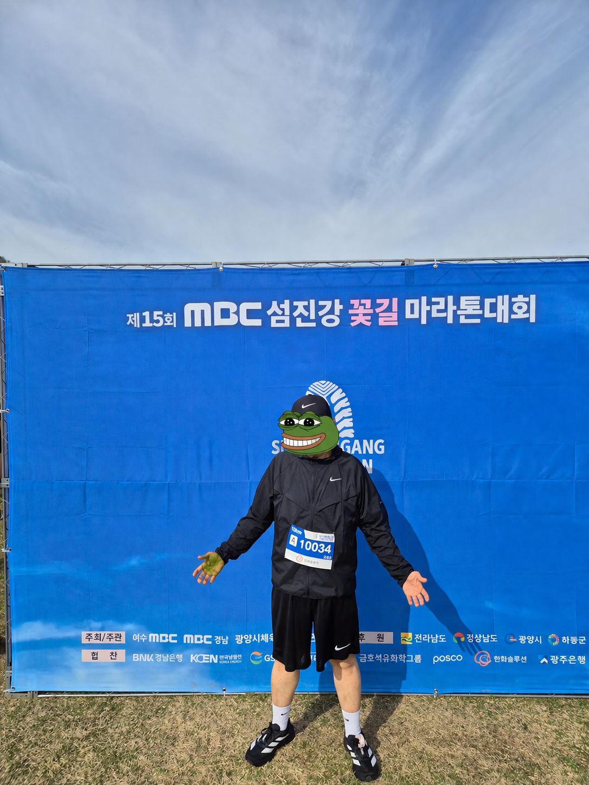
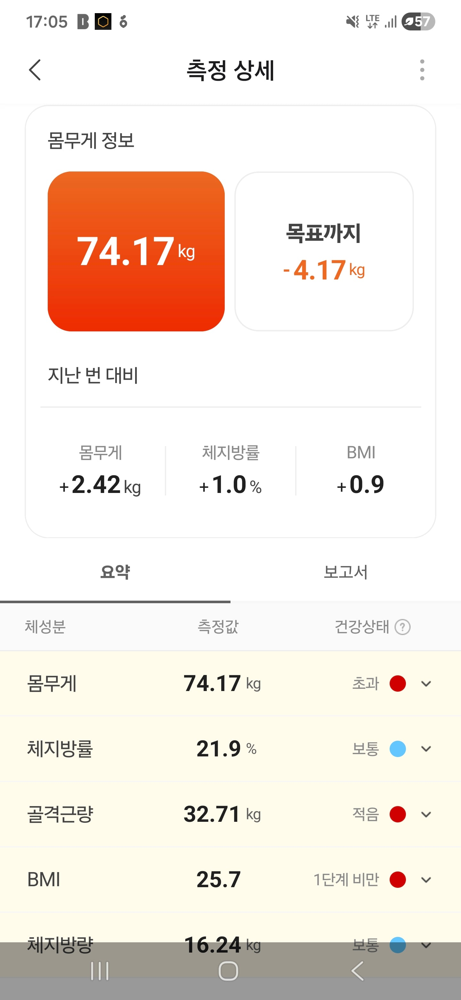
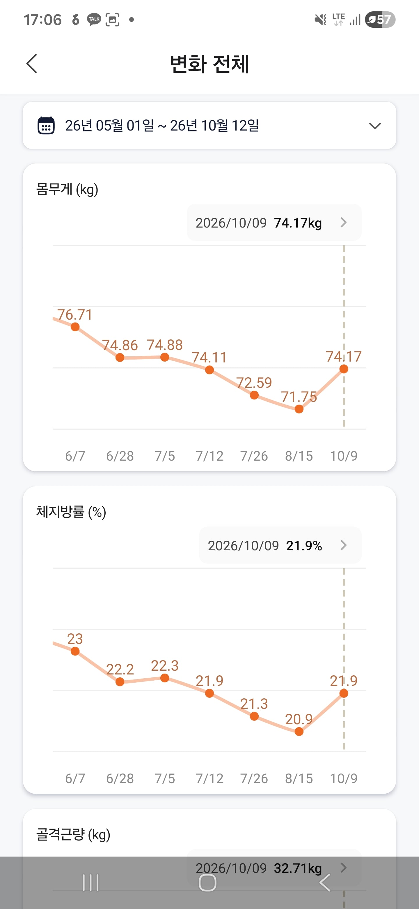
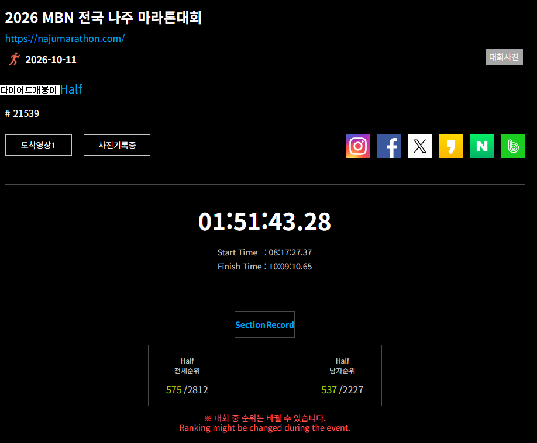

1주차 - https://www.dogdrip.net/661484307
2주차 - https://www.dogdrip.net/662380377
3주차 - https://www.dogdrip.net/663506033
4주차 - https://www.dogdrip.net/664839512
5주차 - https://www.dogdrip.net/666138482
6주차 - https://www.dogdrip.net/667505516
7주차 - https://www.dogdrip.net/668793993
8주차 - https://www.dogdrip.net/670326702
9,10주차 - https://www.dogdrip.net/672719444
25년 결산 - https://www.dogdrip.net/679616346
26년 1/4분기 결산 - https://www.dogdrip.net/695980461
안녕 개붕이들아
낼모레 니들이 존나 혐오하는 영포티로 진화중인
30대 후반의 씹돼지 아저씨다
26년 10월로써 마운자로 시작하면서 다이어트와 운동시작한지 1년이 되는 달이였다
가타부타 다 말이 길어지니 그냥 다 짜르고 시작하겠다
* 지난 이야기......

88년생 키 170 몸무게 135~140 왓다갔다 했었음 체지방이 아마 48~45 왔다갔다 했을때였지
그리고 한 반년 조금 더 지나서

이떄가 올해 4월쯤 몸무게 83kg을 찍고 마라톤 대회나가서 10km 56분을 찍고 좋다고 기뻐했을때였다
* 26년 10월 지금!
지난 4월에서부터 2개월정도 더 마운자로를 사용하고 6월말까지 마운자로로 다이어트 이후
7월부턴 단약 그뒤로 지금까지 계속 단약하면서 체중조절 및 운동과 식단관리로 이어나갔다
아무래도 금액적인 문제도 있었고 이제 그만 맞을떄도 됐다 싶어서 단약한지 한 4개월정도 됐네
지금은 어떠냐고?


최저체중 71까지 찍으면서 살았다가 최근에 마라톤 및 웨이트 운동의 볼륨을 올리고 식단 사이사이 보충제와 부스터, 크레아틴을 챙겨먹으며
벤치중량이 50 -> 80
스쿼트 중량이 65 -> 90
데드중량이 70 -> 90
으로 늘렸고 식단을 체중량감 식단에서 린매스업식단으로 단백질섭취량을 100g정도 늘렸다
(ISP랑 WPC 하루에 번갈아가면서 2번씩 먹는데 마운자로값이 보충제값으로 깨지네;;)
덕분에 체중은 늘었지만 아무래도 근력이 좀 붙고 피부늘어진것도 좀 나아지더라
체중은 기존보다 2~3kg정도 늘었는데 그래도 예전보단 식단도 훨씬 할만해지고
주변사람들도 얼굴이 시체처럼 보였다가 지금은 그나마 사람몰골로 돌아왔다고 하더라
그리고 바로 어제 하반기 목표로 했던 MBN 나주 마라톤에서 하프를 뛰고 결실이 맺었다

솔직히 결승선 통과하면서 그생각이 들더라
좀만 더 업힐에서 피치를 올렸다면
후반에 페이스를 10초만 더 당겼다면
초반병목에서 앞자리를 차지해서 병목에서 시간을 버리지 않았다면 149찍지 않았을까? 싶었는데
어쩌겠는가.... 그래도 목표로 했던 2시간 언더 성공해서 정말 기뻣다..
이거하려고 지난 5~9월동안 월평균 러닝마일리지가 250km를 채우며 뛰었다
솔직히 이때부턴 다이어트용 러닝이 아니라 어떻게든 하프마라톤 PB를 세우고싶어서 전투적으로
운동을 했었지... 막상 성적표 받아보니 149찍을수 있었을텐데 하면서 아쉽지만
그래도 목표로 했던 2시간 언더를 훨씬 초과해서 달성해서 기분이 매우매우 좋다
가끔가다 개드립보다가 마운자로 이야기가 나오거나 다이어트, 운동관련 글이 보이면 많은 이들이 댓글로 그러더라
[마운자로 꽂으면 다됌, 돼지새끼들 마운자로 나오니 딸깍으로 살뺴니 세상 편해졌네, 마운자로가 무안단물급이네]
[운동이고 식단이고 조또 허상이다 기승전마운자로로 귀결된다 마운자로는 신이다]
딱히 부정하고싶은 생각은 없는데
내가 부자가 아닌데 마운자로 평생맞을수도 없는거고 지난 1년간에 내가 뛴 거리만 나이키 런클럽 앱확인 해보니
2300km를 뛰었더라... 웨이트 첨 시작했을떈 벤치 빈봉 10개도 후들거리면서 했고
1km 페이스가 13:20나왔으며 1.3.km뛰고 3일을 앓아누웠어.....
마운자로가 정말정말 많은 도움을주고 나에게 새삶의 계기를 준것을 부정하진 않지만
그래도 난 내가 한 노력과 앞으로 할 노력들이 전부 의미없는 짓이라 생각하지 않아
실제로도 단약하고 10kg정도는 더빼기도 했고... 목표로 했던 70kg까지 아직 4kg정도 남았는데 뭐....
목표치긴 한데 이것도 이짓거리 하다보면 달성하지 않을까? 싶네..
아무튼 마운자로나 위고비로 다이어트 하는애들에게 초치는 개새끼들이 많아서
[마운자로 그거 평생 맞아야 한다 단약하면 바로 요요와서 다시 돼지된다]
[마운자로 맞고 다이어트 하는 돼지새끼들은 처먹는거 지 의지로 조절못하는 노답새끼들이다]
[마운자로 끊는순간 좆된다 평생 약맞을 각오하고 살아라]
[아구통 교수가 그러던데 결국은 다시 돼지될거니 넌 결국가서 실패할것이다]
왜 자기랑 관련도 없는 남들의 필사적인 노력을 깎아내리면서 초치려고 하는지 정말 궁금하다
그리고 마운자로나 위고비 맞으면서 다이어트 하는애들한테도 말하고싶은게
살은 하루아침에 빠지지 않고 마찬가지로 하루아침에 살찌지 않는다 지난 n년간의 생활의 성적표가
자기의 몸의 건강상태와 체력상태인것이니 자기 자신의 라이프스타일과 식단을 바꿔야 더 나은 삶을 살아갈수 있다는걸
항상 조심하면서 밖에서 음료수 하나 사먹을떄도 제품뒷면의 칼로리나 성분표 보면서 따지는것부터 생활습관화를 해야하는거니
다들 성공해서 건강한 삶을 살기를 기원한다~~!

노력한 개붕이는 개추야